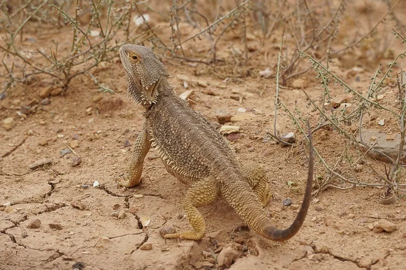

爬行动物 · 动物界
鬃狮蜥 Pogona vitticeps

澳大利亚中部荒漠的日行性蜥蜴，喉部有发达的棘状鳞鬣，受威胁时展开并变黑，是十分流行的异宠。
- 分类
- 门脊索动物门纲爬行纲目有鳞目科飞蜥科属鬃狮蜥属
- 栖息环境
- 澳大利亚中部的干旱草原、沙地与稀树灌丛
- 地理分布
- 澳大利亚中部及东南部内陆地区
- 保护级别
- IUCN 无危（LC）；非中国原产，在中国无保护级别
物种志
鬃狮蜥体长约 40–60 厘米，头部宽大呈三角形，喉部和身体两侧长有棘状鳞片，受到威胁时会鼓起喉囊、使喉部鳞鬣变黑，并上下点头、挥动前肢，形成一套完整的威慑动作。体色因产地不同而有黄、橙、红、灰等变化，是人工选育品系最丰富的爬行动物之一。
它原产于澳大利亚中部的干旱草原、沙地和灌丛，昼行性，清晨先晒太阳升温再活动，以昆虫和植物为食，幼体偏肉食，成体素食比例明显增加。繁殖期雄性会膨起喉囊争夺配偶，雌性每窝产卵 15–30 枚，孵化期约 55–75 天，巢温影响后代性别。它在澳大利亚受到保护，出口受严格限制；国际宠物市场上的个体多来自人工繁殖，饲养时需要模拟强光与干燥环境。
形态与习性
- 食性杂食，昆虫为主，也吃嫩叶和花
- 体长全长 40–60 cm
- 体重约 250–500 g
- 寿命约 8–12 年
- 繁殖卵生，每窝 15–30 枚，孵化期 55–75 天
- 活动节律昼行性，喜在晨间晒太阳
- 防御鼓起喉囊、变黑并点头宣示威吓
趣味知识
- 鬃狮蜥受威胁时会鼓起喉部鳞鬣并变黑，看起来像长了一圈“胡子”。
- 它的性别由孵化温度决定，温度偏高时孵出的雌性更多。
- 人工选育已培育出黄色、红色、白色等多个色型，统称“品系”。